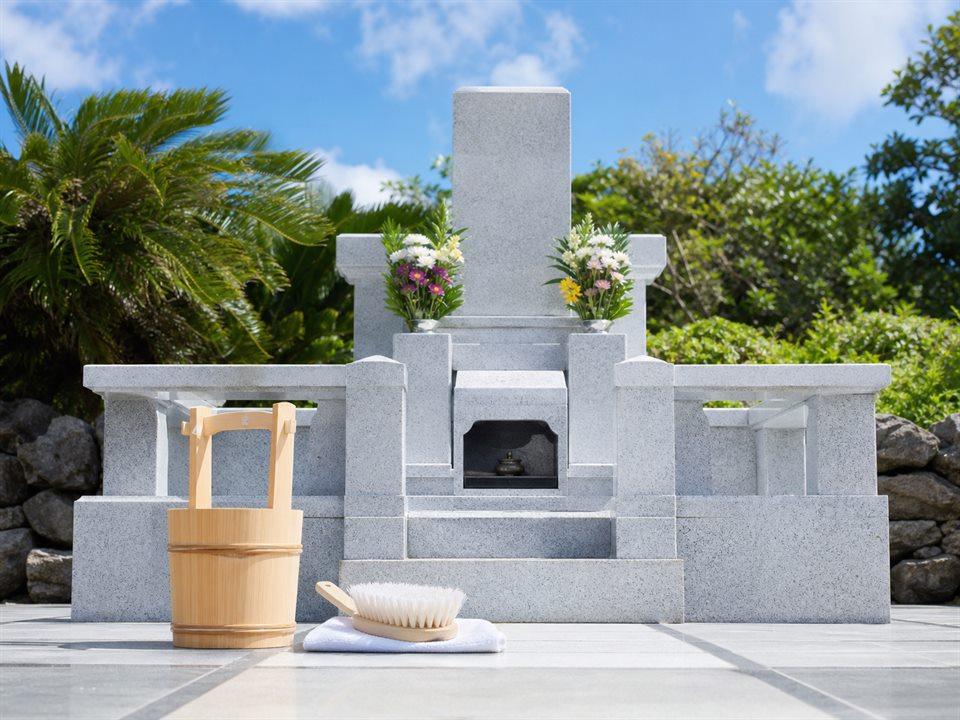
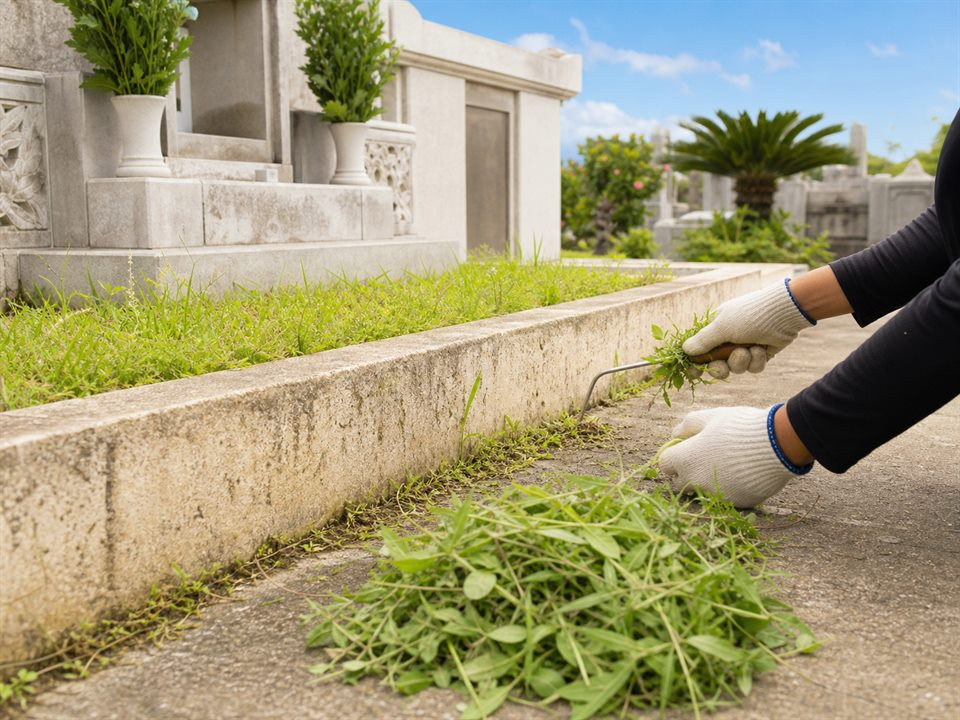
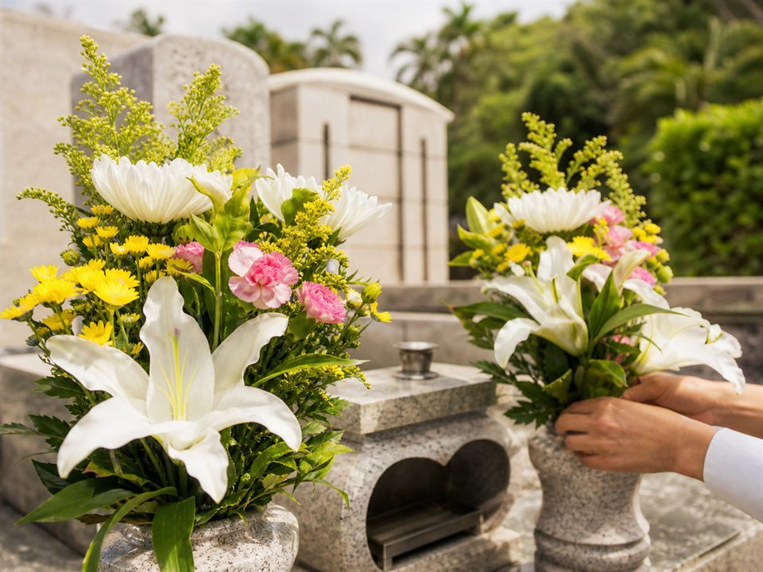
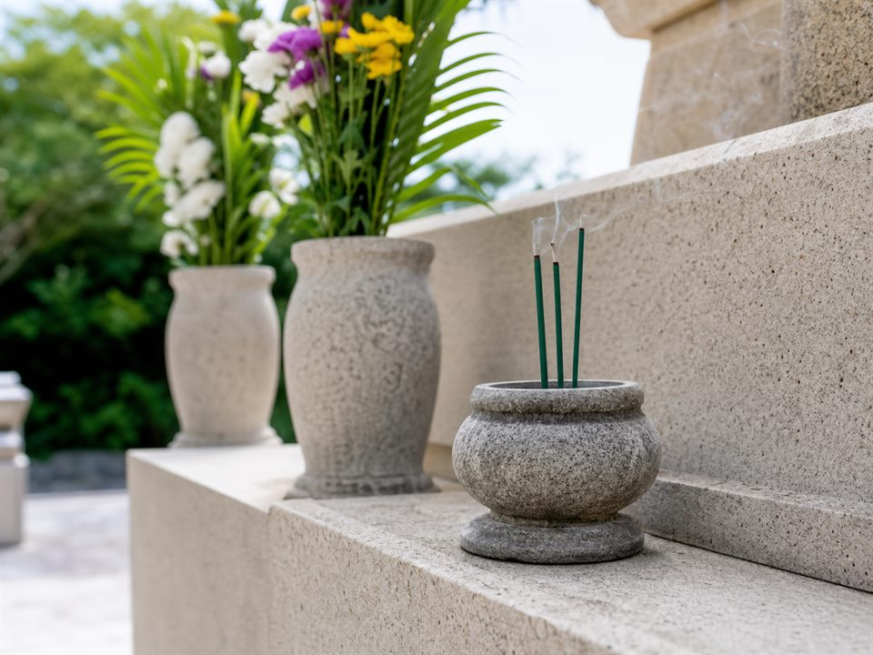
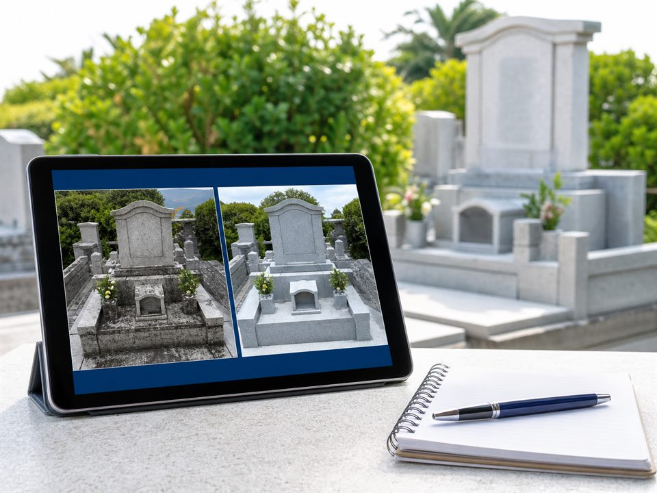
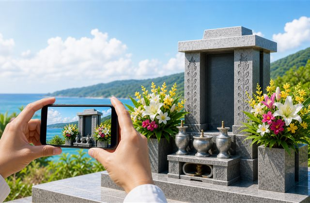

県外に住んでいて
帰れない
遠くにいても、
手を合わせたい。
沖縄のお墓管理・掃除を代行します。
お墓清掃・お花のお供え・写真付き報告書で、
心を込めて対応します。
こんなお悩みはありませんか？
高齢で
掃除がつらい
草木が伸びて
しまい心配
シーミー前に
きれいにしたい
親族に
頼みづらい
サービス内容

お墓掃除
墓石まわりの汚れや落ち葉を整え、気持ちよくお参りできる状態にします。

草刈り・雑草除去
伸びた草や細かな雑草を取り除き、お墓まわりをすっきり整えます。

お花のお供え
ご希望に合わせてお花を用意し、清掃後に心を込めてお供えします。

線香代行
お線香のお供えまで代行し、遠方のご家族の想いを丁寧に届けます。

作業前後の写真報告
現地に行けない場合も安心できるよう、作業前後の様子を写真付きでご報告します。
定期管理プラン
月1回などの定期的な管理で、シーミー前や台風後の確認にも対応します。
料金プラン
※料金は墓地の広さ・場所・作業内容により変動します。
ライトプラン
9,800円〜
掃き掃除、簡易清掃、
写真報告
標準プラン
16,500円〜
草刈り、墓石まわり清掃、
お花、写真報告
しっかり清掃プラン
22,000円〜
高圧洗浄、草刈り、墓石まわり、
お花、写真報告
定期管理プラン
月額5,500円〜
月1回程度、簡易清掃、
写真報告
お支払い方法
Stripeのクレジットカード決済に対応
お墓の場所・広さ・作業内容を確認し、料金が確定してから専用の決済リンクをお送りします。金額をご確認のうえ、Stripeの安全な決済ページでお支払いください。
お見積り
ご希望内容を確認して料金をご案内します。
決済リンク送付
確定金額のStripe決済リンクをメールでお送りします。
カード決済
お支払い確認後、作業日程に沿って対応します。
沖縄お墓まもりサポートが選ばれる理由
作業の流れ
お問い合わせ・ご相談
お問い合わせフォームから、お墓の場所や気になる点をお知らせください。
お見積り・日程調整
内容を確認し、料金・作業日・Stripe決済リンクをご案内します。
作業実施
お支払い確認後、清掃・草刈り・お花やお線香のお供えまで丁寧に行います。

作業後の写真撮影
仕上がりが分かるよう、作業後の様子を撮影します。
写真付き報告
ご家族に安心していただけるよう、写真付きでご報告します。
よくあるご質問
Qどのくらいの頻度で依頼できますか？
単発のご依頼から、月1回程度の定期管理までご相談いただけます。
Q遠方ですが、フォームだけで依頼できますか？
可能です。フォームから場所やご希望内容をお知らせいただければ、お見積りと作業後の写真報告まで対応します。
Qお花やお線香はこちらで用意してもらえますか？
はい。ご希望に合わせてお花・お線香のお供え代行も承ります。
Qシーミー前だけの依頼も可能ですか？
可能です。混み合いやすい時期のため、早めのご相談をおすすめします。詳しくは シーミー前のお墓掃除 をご確認ください。
Q支払い方法は？
お支払いはStripeの安全な決済ページを利用したクレジットカード決済に対応しております。ご依頼内容と料金の確認後、専用の決済リンクをご案内します。
Q沖縄県内ならどの地域でも依頼できますか？
那覇市、浦添市、宜野湾市、沖縄市、うるま市など沖縄県内のご依頼を受け付けています。場所や現地状況により確認が必要な場合がありますので、まずはご希望エリアをお知らせください。
Q作業前後の写真はどのように届きますか？
作業後に、お墓まわりの様子が分かる写真付き報告をメールでお送りします。遠方にお住まいのご家族にも確認しやすい形でご報告します。
Q雨や台風の場合はどうなりますか？
天候不良や台風、現地状況により安全に作業できない場合は、日程変更をご相談します。無理な作業は行わず、状況に合わせて対応します。